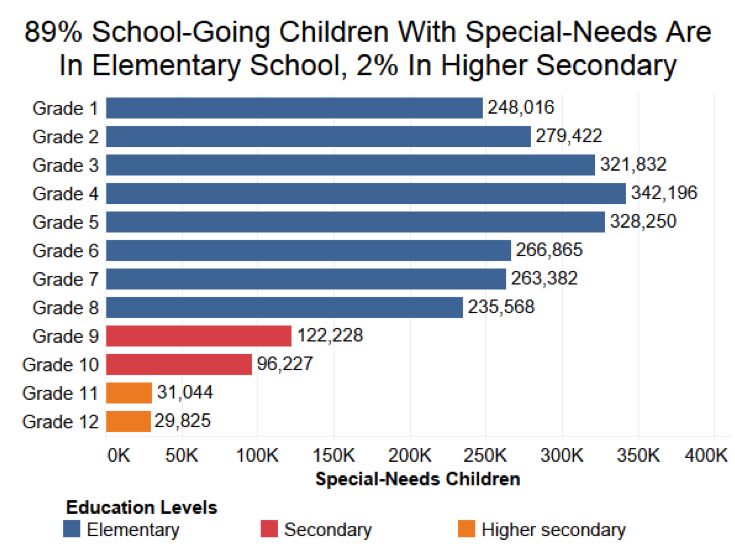

Mission
To enable visually impaired students in inclusive classrooms to reach their full potential and have enriching classroom experiences as their peers by providing them accessible books, educational tools, kits and devices, and create a system to help them solve any other problems they encounter in learning.
Why Project Drishti?
Early in our research about the scope of impact of our project, we realized that the state of quality education for the visually impaired was not at par with that of mainstream students. As a result of this the literacy and employment rates of those with special needs was also very low. The cause of this is not only low awareness among the parents of students with special needs but also the lack of resources to provide them understanding and in-depth learning in school.
 Summary of the diagram - The bar diagram shows that 89% school going children with special needs are in Elementary School, whereas there are only 2% students in Higher Secondary School.
Digitization of books
This project has been taken up by the NGO Saksham where individuals are paid to digitize scanned school/ university level books. These books are then converted to audio books or books with larger fonts. As a school that is well equipped with 2 state of the art computer labs, we have trained students from senior classes to digitize books in our school and have managed to upload 1500+ pages i.e. 7 books to the digital library created by Saksham called Sugamya Pustakalaya.
Our students, to maximize the outreach of the digitisation project, have taken it beyond the boundaries of our own school and plan to train students from other schools and conduct digitization drives in these schools as well to reduce the existing deficit of e-books accessible to the visually impaired.
Development of tactile study material
We have partnered with the Centre of Excellence in tactile graphics, IIT, Delhi to develop study material in tactile form. Our students and teachers are working closely with the team at IIT to create the most effective teaching aids based on the curriculum and classroom exercises.
Navigation Device
Our school has always believed in providing students an environment that stimulates them to use creative thinking and inventions to solve problems they see around them.
In conjunction to this, a team of students of class 10 are developing a navigation device to help visually impaired students to navigate independently around the school. The device consists of a navigation belt that is fitted with ultrasonic sensors, a radio frequency receiver and a voice speaker. Specific locations around the school are fitted with modules which emit unique radio frequencies which are captures by the sensors on the belt and the speaker tells the student his/her location in the schools and also how to progress forward to reach a certain location.
Real time student communication app
A team of students are developing a teacher-student communication portal where visually impaired students can use speech to text software to convert their questions to text and send as a message to their teacher in real time, and receive a reply which can be converted from text to speech, and heard by them. This system allows the student to have their doubts cleared at any time, and not just in class.
Kits
We plan on providing each school we visit a kit which would mainly comprise of 5 components
- Geometry box - We have sourced tactile geometry boxes from Worth Trust to provide visually impaired students with embossed geometry tools that include a scale, a compass, a set square and a protractor. We believe math is a subject that holds great importance especially in early stages of learning. Therefore by providing them a tactile geometry kit we would like to ensure that they don't miss out on the important topics of Geometry.
- Maps - Maps have been an important part of the human history for a long time; possibly from past 8,000 years. Hence, students at our school are working on making embossed Indian political and physical maps along with a World map with the help of a Spur Wheel.
- Colour pencils and tactile colouring books - Students at our school are developing colour pencils along with a tactile colouring book so that the VI students under the age of 6 are able to identify the colors present in our surroundings, and have the same art and craft experiences in primary school as other students.
- Games - We are working on making common games accessible to the visually impaired in collaboration with the Centre of Excellence in tactile graphics, IIT Delhi.
- Tactile diagram and concept books - We plan to compile the tactile diagrams from the curriculum in one book each for Math, Science and Social Science that can be used by the visually impaired students, and include it in the kit.
Refurbishing NAB
During our visits to the National Association for the Blind, we found that it lacked in basic infrastructure and in providing a safe environment for the students, as it had broken glass windows, broken tables and chairs, etc. In order to improve its present state we will be providing them with new classroom furniture, new windows and white washing their classroom areas.
Discussions with CBSE
Through talks with senior visually impaired students at our school we understood that they face problems when it comes to giving exams. They are expected to use writers while giving exams, but on a regular basis quite a few of them use laptops to type out their notes and listen to audiobooks. They have expressed that they find it difficult to articulate to an examiner and would prefer to write their exams themselves on a computer.
Also, in the social science exam, instead of map work, visually impaired students are provided alternative questions. But in the scenario that tactile maps are available, they are eager to acquaint themselves with the embossed maps and attempt the questions that others do as well.
We want to approach CBSE with these requests, and aim to bring about changes which will put visually impaired students at an equal footing with other students.